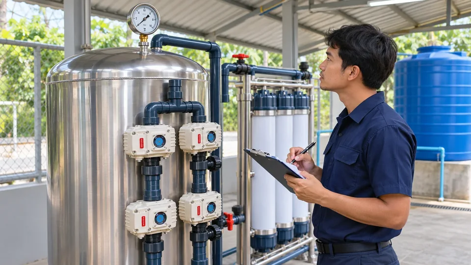

วิธีเลือกเครื่องกรองน้ำประปาชุมชน ให้เหมาะกับแหล่งน้ำและปริมาณใช้
เลือกเครื่องกรองน้ำประปาให้ตรงงาน เริ่มจากผลตรวจน้ำ ปริมาณใช้ และความพร้อมของผู้ดูแล บทความนี้พาเลือกกระบวนการ ประเมินกำลังผลิตและถังพัก พร้อมแยกบทบาทของโรงกรองน้ำประปากับเครื่องกรองน้ำดื่ม RO เพื่อวางระบบชุมชนอย่างมีข้อมูล

สารบัญ
เริ่มจากน้ำที่ต้องการใช้ และปัญหาที่ต้องแก้
การเลือกเครื่องกรองน้ำประปาชุมชนควรเริ่มจากวัตถุประสงค์การใช้น้ำ แหล่งน้ำ และผลตรวจน้ำดิบ ก่อนเปรียบเทียบราคาและขนาดถังกรอง ระบบที่เหมาะกับน้ำใช้สำหรับล้างหรือสุขาภิบาล อาจยังต้องมีขั้นตอนเพิ่มเติมหากต้องการผลิตน้ำดื่ม
สำรวจด้วยว่าปัญหาเกิดจากน้ำต้นทาง ระบบกรอง ถังพัก หรือท่อจ่าย หากน้ำผิดปกติเฉพาะบางจุด การแก้ท่อหรือทำความสะอาดถังอาจตรงสาเหตุกว่าการเพิ่มเครื่องกรอง อ่านแนวทางตรวจ น้ำประปาหมู่บ้านขุ่นและไม่สะอาด ประกอบก่อนวางแผนปรับปรุง
ตรวจคุณภาพน้ำดิบก่อนเลือกสารกรองและกระบวนการ
สี กลิ่น และความใสเป็นข้อมูลเบื้องต้น แต่ใช้แทนผลตรวจไม่ได้ ควรให้ห้องปฏิบัติการหรือผู้ออกแบบแนะนำรายการตรวจตามแหล่งน้ำและคุณภาพน้ำปลายทาง รวมถึงพิจารณาความเปลี่ยนแปลงระหว่างฤดู
| ข้อมูลที่ควรประเมิน | ใช้ช่วยตัดสินใจเรื่องใด |
|---|---|
| ความขุ่น สี และสารแขวนลอย | การเตรียมน้ำ การแยกตะกอน และการกรอง |
| เหล็กและแมงกานีส | การปรับสภาพหรือออกซิไดซ์และวัสดุกรองที่เหมาะสม |
| ความกระด้างและ pH | การลดคราบหินปูนและสภาวะทำงานของกระบวนการ |
| ความนำไฟฟ้า / TDS และสารเฉพาะพื้นที่ | ประเมินน้ำกร่อย สารละลาย และความจำเป็นของเมมเบรน |
| จุลชีววิทยาและรายการตามการใช้งาน | วิธีฆ่าเชื้อ การเก็บและจ่ายน้ำ และการตรวจยืนยัน |
ตารางเป็นแนวทางตั้งต้น ไม่ใช่ชุดตรวจตายตัว หากมีความเสี่ยงสารหนูหรือสารเฉพาะพื้นที่ ต้องเพิ่มรายการตรวจนั้นโดยตรง การกรองตะกอนไม่ใช่หลักฐานว่ากำจัดสารละลายหรือเชื้อโรคได้ครบ
เลือกกระบวนการให้ตรงกับน้ำผิวดิน น้ำบาดาล และน้ำกร่อย
| ลักษณะน้ำหรือปัญหา | แนวทางที่ใช้ประเมิน | ตัวอย่างข้อมูลสินค้าที่เกี่ยวข้อง |
|---|---|---|
| น้ำผิวดินขุ่นและเปลี่ยนตามฤดู | ประเมินการแยกตะกอน การกรอง และฆ่าเชื้อตามคุณภาพน้ำ | ถังกรองน้ำประปาผิวดินอัตโนมัติ |
| น้ำบาดาลมีเหล็ก แมงกานีส หรือสีสนิม | ตรวจสภาวะน้ำและขั้นตอนปรับสภาพก่อนกรอง | ถังกรองน้ำประปาบาดาล |
| น้ำมีความกระด้างหรือคราบหินปูน | ใช้ผลตรวจความกระด้างเลือกชุดปรับสภาพและแผนดูแล | รุ่นสำหรับน้ำมีหินปูนในหน้าถังกรองบาดาล |
| น้ำกร่อยหรือสารละลายสูง | ประเมินชนิดเมมเบรน น้ำผลิต น้ำทิ้ง และเงื่อนไขน้ำเข้า | ชุดลดค่าน้ำกร่อยในหน้าถังกรองบาดาล |
| ต้องการน้ำดื่มแยกจากน้ำใช้ | ออกแบบการเตรียมน้ำ ระบบ RO การเก็บและจ่ายให้เหมาะกับน้ำดื่ม | เครื่องกรองน้ำดื่ม RO |
ไม่จำเป็นต้องติดตั้งทุกกระบวนการในระบบเดียวกัน และชนิดแหล่งน้ำไม่ได้บอกปัญหาทั้งหมด ดู ความต่างระหว่างระบบกรองน้ำผิวดินกับน้ำบาดาล หากต้องการรายละเอียดเฉพาะแหล่งน้ำ
CDC อธิบายว่ากระบวนการผลิตน้ำ อาจประกอบด้วยหลายขั้นตอน และเลือกใช้ต่างกันตามน้ำต้นทาง จึงไม่ควรสรุปคุณภาพน้ำจากจำนวนถังกรองเพียงอย่างเดียว
คำนวณกำลังผลิตจากยอดใช้และเวลาเดินระบบ
รวบรวมปริมาณใช้น้ำต่อวัน ช่วงใช้น้ำสูงสุด ปริมาณน้ำดิบที่จ่ายได้จริง ความจุถังพัก และเวลาที่เดินเครื่องได้ จำนวนครัวเรือนช่วยเริ่มประเมิน แต่ควรตรวจสอบกับยอดใช้จริงและประเภทกิจกรรมในพื้นที่ด้วย
สมมติชุมชนต้องการน้ำ 60,000 ลิตรต่อวัน และมีเวลาเดินระบบ 8 ชั่วโมง จะได้อัตราผลิตเฉลี่ยที่ต้องการ 60,000 ÷ 8 = 7,500 ลิตรต่อชั่วโมง หรือ 7.5 ลูกบาศก์เมตรต่อชั่วโมง
นี่เป็นเพียงตัวอย่างทางคณิตศาสตร์ ยังไม่ใช่คำแนะนำให้เลือกรุ่นใด ต้องพิจารณาเวลาล้างระบบ การหยุดบำรุงรักษา ช่วงใช้น้ำสูงสุด น้ำดิบ และส่วนเผื่อตามการออกแบบ
ถังพักช่วยรองรับช่วงใช้มากกว่าช่วงผลิต แต่ไม่เพิ่มกำลังผลิตของเครื่อง ควรประเมิน ถังเก็บน้ำประปา ร่วมกับระบบจ่ายและปั๊ม เพื่อไม่ให้มีน้ำอยู่ในถังแต่ส่งถึงผู้ใช้ไม่เพียงพอ
อ่านขนาด 10Q, 12Q และ 24Q อย่างไรไม่ให้สับสน
หน่วยเวลาเป็นส่วนสำคัญของกำลังผลิต 1 ลูกบาศก์เมตรเท่ากับ 1,000 ลิตร แต่ชื่อรุ่นที่มีตัว Q ไม่ควรถูกตีความโดยไม่อ่านสเปกของผลิตภัณฑ์นั้น
| ตัวอย่างชุดในเว็บไซต์ | ข้อมูลกำลังผลิตที่ระบุ | สิ่งที่ควรดูเพิ่ม |
|---|---|---|
| ถังกรองน้ำผิวดิน 10Q | 10,000 ลิตรต่อชั่วโมง | ชุดถังกรองสแตนเลสและชุดไมโครตามรายละเอียดรุ่น |
| ถังกรองน้ำบาดาล 10Q | 10,000 ลิตรต่อชั่วโมงของชุดถังกรอง | เลือกรูปแบบทั่วไป น้ำมีหินปูน หรือชุดลดน้ำกร่อยตามผลตรวจ |
| โรงกรองน้ำประปา 12Q | 12,000 ลิตรต่อชั่วโมงตามแบบ | ขอบเขตชุดปรับคุณภาพน้ำผิวดินและระบบประกอบ |
| โรงกรองน้ำประปา 24Q | 24,000 ลิตรต่อชั่วโมงตามข้อมูลรุ่น | ปริมาณน้ำดิบ พื้นที่ ระบบจ่าย และกำลังผลิตที่ต้องการ |
| เครื่องกรองน้ำดื่ม RO 12Q / 24Q | 12,000 / 24,000 ลิตรต่อวัน | เป็นระบบน้ำดื่มและหน่วยต่อวัน ต่างจากโรงกรองน้ำประปาในตัวอย่างด้านบน |
สำหรับชุดลดน้ำกร่อย ตัวเลขของถังกรองต้นทางไม่ใช่การยืนยันอัตราน้ำผลิตหลังเมมเบรน ต้องดูสเปกของชุดนั้นแยกกัน ส่วนการแสดงขนาดถังกรอง 10Q / 15Q / 20Q / 30Q ในหน้าสินค้า ควรขอรายละเอียดของขนาดที่เลือกก่อนเปรียบเทียบอุปกรณ์
Backwash อัตโนมัติช่วยอะไร และยังต้องตรวจอะไร?
ระบบล้างย้อนอัตโนมัติช่วยควบคุมการล้างตามการตั้งค่า ลดภาระการสับวาล์วด้วยมือ แต่ยังต้องมีผู้ดูแลตรวจว่าล้างได้จริง น้ำสำหรับล้างเพียงพอ วาล์วทำงานถูกต้อง และคุณภาพน้ำหลังกลับเข้าสู่การกรองเหมาะสม
- ตรวจแรงดันและอัตราการไหลเทียบกับช่วงปกติของระบบ
- ตรวจการทำงานของวาล์วไฟฟ้า กล่องควบคุม และทางระบายน้ำ
- ติดตามความขุ่นหรือคุณภาพน้ำก่อน–หลังกรองตามแผนตรวจ
- กำหนดรอบและวิธีล้างจากคู่มือ ชนิดสารกรอง และข้อมูลหน้างาน ไม่ใช้จำนวนวันเดียวกับทุกระบบ

การล้างย้อนช่วยพาตะกอนออกจากชั้นกรอง ไม่ได้ทำให้วัสดุทุกชนิดกลับมาเหมือนใหม่ การฟื้นสภาพเรซินหรือการเปลี่ยนวัสดุเป็นอีกงานหนึ่ง ดู หน้าที่ของสารกรองน้ำ และ แนวทางดูแลระบบประปาหมู่บ้าน ประกอบ
เมื่อไรควรประเมินเครื่องกรองน้ำดื่ม RO เพิ่ม?
หากโครงการต้องการน้ำดื่มแยกจากน้ำใช้ หรือตรวจพบปัญหาสารละลายที่ต้องใช้กระบวนการเฉพาะ ควรประเมินระบบ RO หรือเทคโนโลยีที่เหมาะกับผลตรวจ ไม่จำเป็นต้องใช้ RO กับน้ำทุกส่วนของชุมชนเสมอไป
เครื่องกรองน้ำดื่ม RO ต้องมีการเตรียมน้ำเข้า การตรวจคุณภาพน้ำผลิต และการดูแลถังกับจุดจ่ายร่วมกัน ความใสหรือค่า TDS เพียงตัวเดียวไม่ยืนยันความปลอดภัย อ่าน วิธีเปรียบเทียบเครื่องกรองน้ำ RO 12Q กับ 24Q เพื่อแยกกำลังผลิตน้ำดื่มจากกำลังผลิตน้ำประปาให้ชัด
ตรวจพื้นที่ พลังงาน และขอบเขตงานก่อนขอราคา
- พื้นที่และฐาน: ขนาดเครื่อง ถังพัก ทางขนย้าย และพื้นที่เปลี่ยนสารกรอง
- น้ำต้นทาง: ปริมาณที่มีจริง ขนาดท่อ ปั๊ม และแรงดันที่ระบบต้องใช้
- ระบบไฟฟ้า: โหลดรวมและอุปกรณ์ป้องกันตามแบบ โดยให้ช่างตรวจความพร้อม
- ทางระบาย: รองรับน้ำล้างและจัดการของเสียจากกระบวนการอย่างเหมาะสม
- ขอบเขตงาน: ระบุว่ารวมฐาน ปั๊ม ท่อ ไฟฟ้า ถังพัก ทดสอบ และฝึกผู้ดูแลหรือไม่
หากพิจารณาโซล่าเซลล์ ต้องรวมโหลดของอุปกรณ์และวางแผนเวลาใช้น้ำกับน้ำสำรอง ไม่สรุปว่าทั้งระบบทำงานกลางคืนได้จากการมีแผงเพียงอย่างเดียว อ่าน เครื่องกรองน้ำโซล่าเซลล์กับระบบประปาหมู่บ้าน เพิ่มเติม
ต้นทุนระยะยาวยังมีค่าพลังงาน น้ำล้าง วัสดุกรอง อะไหล่และการตรวจน้ำ ควรขอรายการและเงื่อนไขประเมินให้ตรงกันก่อนเทียบใบเสนอราคา
คำถามที่พบบ่อยเรื่องการเลือกเครื่องกรองน้ำประปาชุมชน
เลือกเครื่องกรองน้ำประปาชุมชนจากจำนวนบ้านอย่างเดียวได้ไหม?
ไม่เพียงพอ ต้องดูยอดใช้น้ำ ช่วงใช้สูงสุด ชั่วโมงเดินระบบ ปริมาณน้ำดิบ ถังพัก และผลตรวจน้ำร่วมกัน
น้ำบาดาลใสแล้วจำเป็นต้องตรวจหรือไม่?
ควรตรวจ เพราะสารละลายและจุลินทรีย์บางชนิดมองไม่เห็นด้วยตา การตรวจช่วยกำหนดว่าต้องปรับคุณภาพส่วนใด
โรงกรองน้ำประปา 12Q เหมือน RO 12Q หรือไม่?
ไม่เหมือน ตัวอย่างโรงกรองน้ำประปาในเว็บไซต์ระบุกำลังผลิตต่อชั่วโมง ส่วนเครื่องกรองน้ำดื่ม RO ระบุต่อวัน และมีเป้าหมายการใช้งานต่างกัน
Backwash อัตโนมัติแปลว่าไม่ต้องดูแลเครื่องหรือไม่?
ยังต้องตรวจการล้าง วาล์ว น้ำสำหรับล้าง แรงดัน คุณภาพน้ำและวัสดุกรองตามคู่มือ
ทุกระบบต้องมีคาร์บอน เรซิน และ RO หรือไม่?
ไม่จำเป็น ต้องเลือกกระบวนการจากปัญหาน้ำจริงและคุณภาพน้ำปลายทาง ไม่ติดตั้งทุกชนิดโดยไม่มีเหตุผล
ควรส่งข้อมูลอะไรให้ช่วยประเมิน?
ส่งแหล่งน้ำ ผลตรวจล่าสุด ยอดใช้น้ำ ชั่วโมงใช้งาน ถังพักเดิม ระบบไฟฟ้า และภาพพื้นที่พร้อมข้อมูลปั๊มกับท่อที่มี